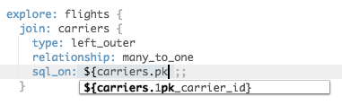

Hi, welcome to my LookML & SQL rules!
This is a work in progress.
Also, these rules are quite opinionated, and some people won't like them. I've tried to provide rationales throughout so you can come to your own conclusions. However, at their core, these rules are about making your LookML and SQL reusable, self-explanatory, and reliable.
Whenever a rule says something "must" be done, there shouldn't be any exceptions within your project. These are rules that need to be followed consistently since others will rely upon them being followed in their work elsewhere.
Whenever a rule says that something "should" be done, there may be reasons to deviate from these rules, and doing so will not break any assumptions elsewhere. Whenever the rule is not followed, a comment must be used to indicate the rationale to future readers of the code.
Summary: Implement consistent dimensions to communicate information about views' keys to developers who use the view
Note: "based on a table" could be either through a `sql_table_name`, `derived_table`, or implicit table name. Essentially, it's any view that's not a "field-only view" which will be joined using `join: {sql ;;}`
view: carriers {
sql_table_name: faa.carriers ;;
dimension: 1pk_carrier_id {
hidden: yes
primary_key: yes
sql:${TABLE}.id;;
}
}
{n}pk_{key_name}......, where n is the total number of columns that form the primary key, and which may be omitted if it is 1, and key_name is any descriptive name.
Rationale: With this naming convention, anyone creating a join can conclusively find the correct logic without having to investigate:
Additionally, anyone reading the join could conclusively verify it.
view: membership {
sql_table_name: membership ;;
dimension: 2pk_user_id {hidden:yes sql:${TABLE}.user_id;;}
dimension: 2pk_group_id {hidden:yes sql:${TABLE}.group_id;;}
dimension: user_x_group {
hidden:yes
primary_key: yes
sql: ${2pk_user_id} || 'x' || ${2pk_group_id} ;;
}
}
explore: invitations {
join: membership {
relationship: many_to_one
sql_on: ${membership.2pk_user_id} = ${invitations.to_user_id}
AND ${membership.2pk_group_id} = ${invitations.group_id} ;;
# ^ I can tell there MUST be only one membership. Looks good.
}
}
explore: users {
join: membership {
relationship: many_to_one
sql_on: ${membership.2pk_user_id} = ${users.id} ;;
# Uh-oh, something is wrong here!
}
}
3pk_a, 3pk_b, and 3pk_c, NOT 1pk_a, 2pk_b, and 3pk_c.
primary_key: yes (if necessary) so Looker can use it for generating symmetric aggregates. This is a small price to pay for the many instances of time saved looking up primary key information when writing/reading explores.
... and the table definition should be defined before any other dimensions.
Rationale: By placing primary keys immediately below a derived table definition, users viewing the view file can more easily verify that the Primary Key Dimensions match the derived table's actual primary keys.
Rationale: The audience for PK information is developers. They use it to inform how to join and consume tables, and they can do so equally well with a hidden field.
Note: If a column that is a primary key should be user facing, you may want to expose it via a separate dimension.
...named like dpk_{key_name}
Rationale: By naming it similarly to Primary Keys, it will be suggested to anyone joining on a view as a possible join key. At the same time, the use of a `d` instead of a number allows it to be differentiated from a primary key
Note: If your database supports multiple projections of data, you may want to come up with a more sophisticated naming scheme instead.
Note: The name for this concept varies greatly from database to database, and you may want your naming scheme to reflect the native name for this concept in your particular database. "sk" is also not ideal in that it could be read as "surrogate key".
Note: If you have compound sort keys, it would be a good idea to include the rank of each column in the dimension name. Unlike the PK naming convention, each column should get a different numner, e.g. idx1_site, idx2_date, idx3_country.
Summary: Implement fields in ways which (a) maximize the ability of developers to reuse them in the future, and (b) maximize the usability of explores for end users
... unless this is (A) a field-only view, or (B) a tightly coupled view (provide a base explore too!)
Rationale: Inter-view dependencies interfere with the re-use of the view
view: users {...}
view: orders {
...
measure: orders_per_user {
sql: ${count} / NULLIF(${users.count},0)
}
}
explore: orders {} # Errors :(
view: users {...}
view: orders {...}
view: users_orders {
# No need for a sql_table_name or derived_table
measure: orders_per_user {
sql: ${orders.count} / NULLIF(${users.count},0)
}
}
explore: orders {} #Doesn't break like before!
explore: users {
join: orders {...}
join: users_orders {
sql: ;;
# Use `sql` instead of `sql_on` and put some whitespace in it
relationship: one_to_one
view_label: "Orders" #For cleaner explore UI
}
}
Rationale: Field-level view labels can't be overridden by a join. Prefer view-level view labels.
"Plain" count fields can/should specify a filter of "primary key dimensions (or any non-nullable field) are not null"
Rationale: By default Looker will implement any non-filtered & non-distinct count field as a `COUNT(*)`. Filtering such "plain" count on PK IS NOT NULL ensures correct counts in all of the following uses of the field: Counting just that table, counting that table when joined on as a one-to-one-or-zero table, counting that table with symmetric aggregates when joined on as a many_to_one table, and counting that table in explores with join paths.
measure: count {
type: count
filters:{
field: 1pk_user_id
value: "-null"
}
}
Rationale: User experience. Just do it.
Note: Think about the audience when you write a description. Information for end users can go in the description, whereas information for other developers can go in a LookML comment
view: order_items { ... 1pk_order_item_id {hidden:yes}}
Rationale: The ID field will make most sense for end users when they are exposed under the view for which they are a primary key.
view: order_items { ... dimension: order_id { ... description: "..." } }
view: orders { ... dimension: id { ... hidden:yes }}
view: order_tems { ... dimension: order_id { hidden:yes }}
view: orders { ... dimension: id {... description: "..." }}
Rationale: Models tend to default to providing dimensions for every column. However, grouping by every field in the query is often not what users want. Trust your explore users to understand the nuance and give them both options.
view: sessions {
...
dimension: source {}
dimension: campaign {}
dimension: device {}
dimension: country {}
measure: _source {
type: string
sql: CASE
WHEN COUNT(${source}) = 0 THEN NULL
WHEN COUNT(${source}) = 1 THEN MIN(${source})
WHEN MIN(${source}) = MAX(${source}) THEN MIN(${source})||' (x'||COUNT(${source})::varchar||')'
WHEN COUNT(${source}) = 2 THEN MIN(${source})||', '||MAX(${source})
ELSE MIN(${source})||' ...+'||(COUNT(${source})-2)::varchar||'... '||MAX(${source})
;;
# Drill fields will be useful here!
}
measure: _campaign {
type: string
sql: CASE
WHEN COUNT(${campaign}) = 0 THEN NULL
WHEN COUNT(${campaign}) = 1 THEN MIN(${campaign})
WHEN MIN(${campaign}) = MAX(${campaign}) THEN MIN(${campaign})||' (x'||COUNT(${campaign})::varchar||')'
WHEN COUNT(${campaign}) = 2 THEN MIN(${campaign})||', '||MAX(${campaign})
ELSE MIN(${campgacampaignign})||' ...+'||(COUNT(${campaign})-2)::varchar||'... '||MAX(${campaign})
;;}
measure: _device {
type: string
sql: CASE
WHEN COUNT(${device}) = 0 THEN NULL
WHEN COUNT(${device}) = 1 THEN MIN(${device})
WHEN MIN(${device}) = MAX(${device}) THEN MIN(${device})||' (x'||COUNT(${device})::varchar||')'
WHEN COUNT(${device}) = 2 THEN MIN(${device})||', '||MAX(${device})
ELSE MIN(${device})||' ...+'||(COUNT(${device})-2)::varchar||'... '||MAX(${device})
;;}
measure: _country {
type: string
sql: CASE
WHEN COUNT(${country}) = 0 THEN NULL
WHEN COUNT(${country}) = 1 THEN MIN(${country})
WHEN MIN(${country}) = MAX(${country}) THEN MIN(${country})||' (x'||COUNT(${country})::varchar||')'
WHEN COUNT(${country}) = 2 THEN MIN(${country})||', '||MAX(${country})
ELSE MIN(${country})||' ...+'||(COUNT(${country})-2)::varchar||'... '||MAX(${country})
;;}
measure: sessions {
type: count
filters: {field:id filter:"-null"}
}
}
Note: In some cases, you may wish to use distinct counts instead of counts in your summary measures, or LISTAGGs/GROUP_CONCATs, but do so with the knowledge that it comes at an increased performance cost, even if not in the chosen case branch.
Summary: Restrict the ways in which you write the SQL for derived tables in order to make them more modular and their results more realiable and understandable.
Note: These rules in particular use a lot of "must" statements. This is for a reason. If they seem hard to comply with at first, they're trying to tell you something :)
Rationale: sql_trigger_value is an older construct and can have subtle timing issues when multiple tables interact.
Rationale: Primary keys define a contract that allows anyone reviewing the logic of a query to evaluate it modularly. Without them, any attempt to troubleshoot a query requires an arbitrarily deep investigation of related subqueries. With them, each query and subquery can be evaluated independently against their declared PK and the declared PK's of the participating tables.
view: user_lifetime {derived_table: {sql:
SELECT
user_id as 1pk_user_id
---
COUNT(*) as lifetime_orders,
SUM(amount) as lifetime_spend
FROM orders
GROUP BY user_id ;;}
view: user_lifetime {derived_table: {sql:
SELECT
user_id,
COUNT(*) as lifetime_orders,
SUM(amount) as lifetime_spend
FROM orders
GROUP BY 1 ;;}
derived_table: {sql:
WITH orders AS (
SELECT order_id, SUM(amount) FROM order_items
GROUP BY 1
)
-- ^ The rule applies to CTE's/subqueries as well
SELECT
user_id as 1pk_user_id
---
COUNT(*) as lifetime_orders,
SUM(amount) as lifetime_spend
FROM orders
GROUP BY user_id ;;}
...where {n} is the total number of columns in the primary key
view: events_rollup {derived_table: {sql:
SELECT
site as 2pk_site,
date as 2pk_date,
---
COUNT(*) as events
FROM events
GROUP BY site,date ;;}
Note: If you are using _in_query to generate a dynamic derived table where a column may or may not be present in the derived table's primary key, you should always select a static number of PK columns and conditionally NULL out their values, rather than selecting a dynamic number of columns.
view: dynamic_events_rollup {derived_table: {sql:
SELECT
site as 2pk_site,
{% if date.date._in_query %} date as 2pk_date, {% endif %}
---
COUNT(*) as events
FROM events
GROUP BY site,date ;;}
view: dynamic_events_rollup {derived_table: {sql:
SELECT
site as 2pk_site,
{% if date.date._in_query %} date
{% else %} NULL
{% endif %} as 2pk_date,
---
COUNT(*) as events
FROM events
GROUP BY site,date ;;}
derived_table: {sql:
SELECT
COUNT (*) as order_count,
user_id as 1pk_user_id
FROM orders
GROUP BY user_id ;;}
view: instance_daily {derived_table: {sql:
SELECT
events.instance_id as 2pk_instance_id,
events.event_date as 2pk_event_date,
---
events.app_version,
COUNT(*) as events
FROM events
GROUP BY 1,2,3
;;}}
view: instance_daily {derived_table: {sql:
SELECT
events.instance_id as 3pk_instance_id,
events.event_date as 3pk_event_date,
events.app_version as 3pk_app_version,
---
COUNT(*) as events
FROM events
GROUP BY 1,2,3
;;}}
view: instance_daily {derived_table: {sql:
SELECT
events.instance_id as 3pk_instance_id,
events.event_date as 3pk_event_date,
ROW_NUMBER() OVER (
PARTITION BY events.instance_id, events.event_date
) as 3pk_app_version_sequence
---
events.app_version,
COUNT(*) as events
FROM events
GROUP BY 1,2
;;}}
Although the above two "questionable" examples satisfy rules T4 & T6, you will likely find that it is not natural to join them on their entire primary key when you try to use them elsewhere.
view: instance_daily {derived_table: {sql:
SELECT
events.instance_id as 2pk_instance_id,
events.event_date as 2pk_event_date,
---
MAX(events.app_version) as app_version,
-- Maybe min too depending on business logic
COUNT(*) as events
FROM events
GROUP BY 1,2
Note: This rule requires some reasoning to evaluate, but with proper PK information, can be done within the context of the current query. For example, the 1-to-1 full outer join example coalesces the PK's from the two sides of the join to come up with the effective primary key of the join.
SELECT
sites.1pk_id as 2pk_site_id,
dates.1pk_date as 2pk_date,
---
daily_rollup.count
FROM sites
CROSS JOIN dates
LEFT JOIN daily_rollup
ON daily_rollup.2pk_site_id = sites.1pk_id,
AND daily_rollup.2pk_site_id = sites.1pk_id
SELECT
sessions.1pk_id as 1pk_session_id,
---
sites.name,
dates.is_holiday
FROM sites
CROSS JOIN dates
INNER JOIN sessions
ON sessions.date = sites.1pk_id,
AND sessions.site_id = dates.1pk_id
SELECT
COALSECE(
historical.2pk_site_id,
incremental.2pk_site_id
) as 2pk_site_id,
COALSECE(
historical.2pk_date,
incremental.2pk_date
) as 2pk_date
---
COALSECE(
incremental.count
historical.count,
) as count
FROM historical
FULL OUTER JOIN incremental
ON incremental.2pk_site_id = historical.2pk_site_id,
AND incremental.2pk_date = historical.2pk_date
... T5/T6 did not use ALL available columns. The window function must have a PARTITION BY of the preceding PK columns (at least one required)
Note: Actually, any window function that produces unique values for each row is acceptable, but this is almost always ROW_NUMBER().
Make sure not to use a RANK-like window function instead of ROW_NUMBER. The former yields duplicate ranks when two rows match. (For example, "Monday, Monday, Tuesday" would have ranks of 1,1,3)
SELECT
user_id as 2pk_user_id,
ROW_NUMBER() OVER (
PARTITION BY user_id
ORDER BY id ASC
) as 2pk_order_sequence_number,
---
id as order_id
GROUP BY 1,2
SELECT
ROW_NUMBER() as 1pk_id,
---
*
FROM (
SELECT site, date, source, count(*) as session_count
FROM sessions
GROUP BY 1,2,3,4
)
I only mention the above example because I've actually seen it used. The primary key for this is simply site,date,source. The ROW_NUMBER added as an afterthough is not a primary key. (In this ruleset, it is disallowed by rules T5/T6 which require one or more columns to precede the window function, if any)
view: user_lifetime {derived_table: {sql:
SELECT
user_id as 1pk_user_id
---
COUNT(*) as lifetime_orders,
SUM(amount) as lifetime_spend
FROM orders
GROUP BY user_id ;;}
Note: This does not strictly need to immediately follow the columns required by rules T5 - T7. After, such columns, the PK may continue with 0, 1, or more aggregates, but this is rare, and in most cases such aggregates would not need to be in a primary key.
Rationale: Often, short subqueries are desired for existence or scalar logic that are (a) not reused outside of the current query, and (b) simple enough to read and understand that they can be analyzed in the context of the containing query with little added complexity
view: new_orders {derived_table:{sql:
SELECT
1pk_order_id
FROM orders
WHERE order_date > (SELECT MAX(order_date) FROM order_rollup)
-- ^ This single-column subquery is exempt
;;}}
view: pending_users {derived_table:{sql:
SELECT
1pk_user_id
FROM users
WHERE id IN (SELECT user_id FROM orders WHERE status='Pending')
-- ^ This single-column subquery is exempt
;;}}
Rationale: Since this style of query/subquery simply passes on the PK attributes of the referenced table/query, it's reasonable to save time writing this query and for readers of your query to go find that PK information in that single other table/query.
view: customers {derived_table: {sql:
SELECT *
FROM ${accounts.SQL_TABLE_NAME}
WHERE is_customer = TRUE
;;}}
Rationale: Rather than trusting/hoping the data will be what you want, we can ensure it and prevent bad data from propagating upstream
Note: In a dialect where dividing by zero throws an error, this is a good approach. If done in a PDT, the building of the new PDT will fail.
SELECT
...
MIN(col)
||SUBSTR('',0 / CASE WHEN MIN(col) = MAX(col) THEN 1 ELSE 0 END)
as assert_col
...unless a limit is also used (which should itself be unusual)
Rationale: We often order data when querying directly, but make sure to remove this ORDER BY clause when saving the query as a derived table, as the sort order does not ultimately affect the table, but does cause the query to use more resources.
Rationale: Sorting is much more resource intensive than a simple MIN/MAX (or FIRST/LAST if your dialect supports it).
derived_table: user_first_order {derived_table: {sql:
SELECT *
FROM (
SELECT
user_id as 1pk_user_id,
---
ROW_NUMBER() OVER (
PARTITION BY user_id
ORDER BY id ASC
) as num,
id as order_id,
FROM orders
)
WHERE num = 1
;;}}
derived_table: user_first_order {derived_table: {sql:
SELECT
user_id as 1pk_user_id,
---
MIN(id) as order_id
FROM orders
GROUP BY user_id
;;}}
Note: If you want to select the min/max based on a different column, like date, see this guide
To clarify, liquid/dynamic SQL in non-persisted, aka ephemeral, derived tables is fine.
Rationale: Triggered persistent tables usually don't have the necessary explore context to correctly evaluate the dynamic logic. And even persists_for derived tables do not work as expected with dynamic SQL (confirmed as of v5.14)
Note: One possible exception may be {{_model._name}}, but still be careful.
Rationale: More often than not, developers use UNION instead of UNION ALL unintentionally, with terrible performance implications. Therefore, if you actually need a plain UNION, make that explicit in an accompanying comment.
This is relevant for any 1:1, 1:m, m:1, 1:0or1 joins. In otherwords, any non-many-to-many join (which you should only be using with great caution)
join: users {
relationship: many_to_one
sql_on: ${1pk_user_id} = ${orders.user_id} ;;
}
join: users {
relationship: many_to_one
sql_on: ${users.id} = ${orders.user_id} ;;
# ^ I can only _hope_ that this is right, or spend time verifying it
}
join: dates {
relationship: many_to_many
sql_on: ${dates.1pk_date} >= $[users.created_date} AND ${dates.1pk_date} <= $[users.deleted_date} ;;
}
explore: order_items {
join: orders {
relationship: many_to_one
sql_on: ${orders.1pk_id} = ${order_items.order_id}
AND ${orders.dpk_user_id} = ${order_items.dpk_user_id}
;; # Results in a hash join with no network activity
}
}
explore: entities {
join: eav_attribute1 {
relationship: one_to_one
sql_on: ${eav_attribute1.2pk_entity_id} = ${entities.id}
AND ${eav_attribute1.2pk_attribute_id} = 1
AND ${eav_attribute1.dpk_entity_id} = ${order_items.dpk_entity_id}
AND ${eav_attribute1.idx_entity_id} = ${order_items.idx_entity_id}
;; # Results in a merge join with no network activity
}
join: eav_attribute2 {
relationship: one_to_one
sql_on: ${eav_attribute2.2pk_entity_id} = ${entities.id}
AND ${eav_attribute2.2pk_attribute_id} = 2
AND ${eav_attribute2.dpk_entity_id} = ${order_items.dpk_entity_id}
AND ${eav_attribute2.idx_entity_id} = ${order_items.idx_entity_id}
;; # Results in a merge join with no network activity
}
}
Note: In the EAV example, even though the first part of the primary key, the distribution key, and the sort key all result in `entity_id`, writing them out multiple times with the different key dimensions communicates what they do to anyone reading the join, and should have negligible performance impact.
For small tables, this won't matter much, but for big tables it will make a big difference, so it's good to be in the habit.
explore: events {
always_filter: {
filters:{ field:codim_activity.__date value:"28 days,null"}
}
}
Note: This is all that's needed if the filtered table is the base of an explore with only left or inner joins. Otherwise, you can push the filter down into the sql_table_name (or derived table) using {% condition view.always_filtered_field %} table.column {% endcondition %}
explore: users {
join: orders {
relationship: one_to_many
sql_on: ${orders.user_id} = ${users.1pk_id} ;;
}
join: favorites {
relationship: one_to_many
sql_on: ${favorites.user_id} = ${users.1pk_id} ;;
}
}
Rationale: In addition to performance problems associated with the multiplicative "fanout", the spurious relationships can cause bad results, and break user trust.
explore: users {
join: user_join_paths {
relationship: one_to_one
# Actually many-to-many, so not joining on PK constraint
sql_on: 0=1
{% if orders._in_query %} OR ${user_join_paths.path} = 'orders' {%endif%}
{% if favorites._in_query %} OR ${user_join_paths.path} = 'favorites' {%endif%}
;;
}
join: orders {
sql_on: ${user_join_paths.path} = 'orders'
AND ${orders.user_id} = ${users.1pk_id} ;;
relationship: one_to_one # Actually one_to_many, but avoiding symmetric aggregates
}
join: favorites {
sql_on: ${user_join_paths.path} = 'favorites'
AND ${favorites.user_id} = ${users.1pk_id} ;;
relationship: one_to_one # Actually one_to_many, but avoiding symmetric aggregates
}
}
Note: The above strategy relies on enforcement of rule F3. See this article for more details.
The following subjects are not in the scope of this ruleset, but are still valuable to know about! These contain links to the most useful resources I could find on these subjects
This is something I really wanted to include, but was not able to this time around. Something like semver. Hopefully a future version will include this. (Pull requests will be considered!) These are super important, but the strategy for these is too broad and complex to fit into this kind of ruleset. I don't personally care for rules constraining indentation, capitalization, and the like, but if you do, here's a possible SQL style guide Entity-Attribute-Value schemas come with their own modeling challenges, but are not relevant to many models, so I decided to leave them out of this ruleset, for now. However, you can get some guidance by studying these two articles:
Change management
Defining distribution, sort keys, indexes, etc
Whitespace, capitalization
EAV Schemas